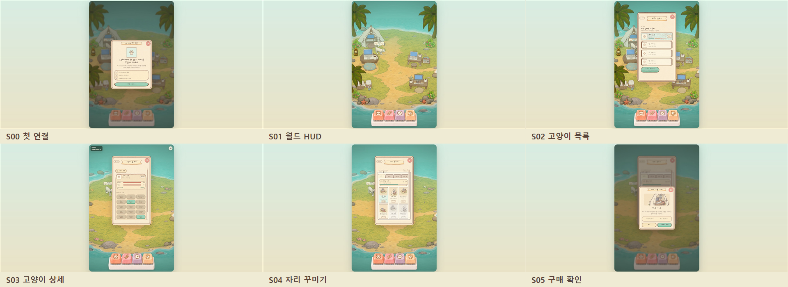
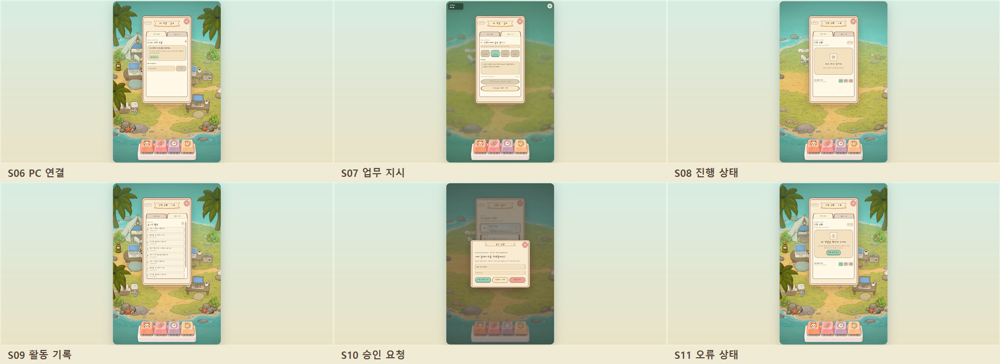
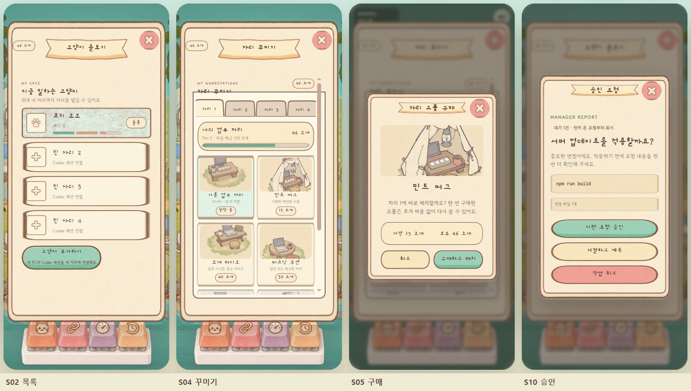

Agent Forest UI 적용·검증 결과
최종 화면 정의서의 S00–S11을 실제 앱에 연결하고 PC 기본 뷰포트와 390×844 모바일 뷰포트에서 반복 검증했다. 프레임·타이틀·탭·카드·버튼은 이미지 자산 기반으로 유지하고, 팝업은 모두 월드 캔버스 안에 배치했다.
93.3종합 점수 / 100
통과 기준 90점
기능 충족 95 · 레이아웃 94 · 이미지형 UI 일관성 93 · 반응형 94 · 가독성 91의 가중 평균이다.
PC 화면 — S00~S05

PC 화면 — S06~S11

모바일 390×844 대표 화면

화면별 판정
| 화면 | 적용·검증 항목 | 점수 | 판정 |
|---|---|---|---|
| S00 첫 연결 | 월드 내부 온보딩, 3단계 안내, 큰 닫기·시작 버튼 | 92 | 통과 |
| S01 월드 HUD | 이름표에 배고픔·배설·행복도 3개 그래프 상시 표시 | 94 | 통과 |
| S02 고양이 목록 | 4개 고정 좌석, 빈 좌석, 상태 그래프, 돌봄 경고 | 94 | 통과 |
| S03 고양이 상세 | 목록 복귀, 욕구 수치, 가격이 있는 털색·무늬, 돌봄 | 92 | 통과 |
| S04 자리 꾸미기 | 4개 탭, Tier 진행, 6개 이미지 카드, 잠금·가격 | 93 | 통과 |
| S05 구매 확인 | 월드 내부 확인창, 상품 이미지, 잔액·가격, 이중 실행 방지 | 95 | 통과 |
| S06 PC 연결 | 연결 안내, 6자리 코드, 세션 목록·해제 진입 | 91 | 통과 |
| S07 업무 지시 | 부서 선택, 지시문, 연결 상태 기반 실행 버튼 | 91 | 통과 |
| S08 진행 상태 | 현재 작업, 상태 칩, 이미지형 빈 상태 | 94 | 통과 |
| S09 활동 기록 | 최대 40개 실시간 기록, 스크롤, 상태 색상 | 94 | 통과 |
| S10 승인 요청 | 월드 내부 중요 승인, 명령·변경 범위, 3개 큰 버튼 | 96 | 통과 |
| S11 상태 화면 | 오프라인·빈 상태 분리, 안내와 복구 버튼 | 94 | 통과 |
반복 검증에서 수정한 실제 결함
완료 빈 상태 고양이 그림이 문구와 겹치던 배경 늘림 제거
완료 승인 명령문 글자 대비를 밝은 종이 배경에 맞게 보정
완료 빈 좌석 제목·설명 인라인 겹침을 2행 그리드로 수정
완료 자리 꾸미기 패널의 4px 가로 넘침과 스크롤바 제거
완료 고양이 월드 이름표에 세 가지 욕구 그래프 연결
완료 PC·모바일 모두 페이지 자체 스크롤 없이 한 화면 유지
실행·회귀 검증
로컬 전용 ?ui-preview=s00~s11 경로로 모든
상태를 재현했다. 최종 브라우저 로그에는 UI 런타임 오류가 없었고,
기존 Three.js 사용 중인 비차단 경고만 확인됐다. 프로덕션 빌드와 타입
검사, 린트가 통과했고 전체 회귀 테스트도 27/27 통과했다.